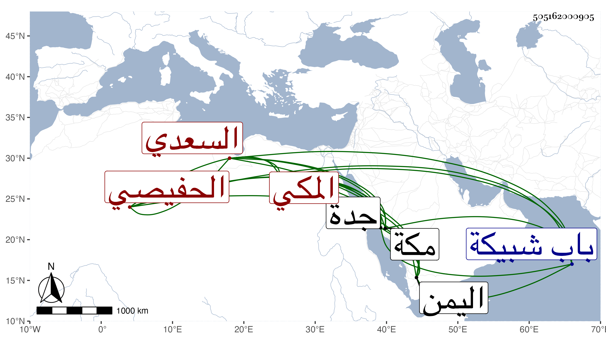

0902Sakhawi.DawLamic.ITO20230111-ara1.EIS1600.505162000905
Biography ID: 505162000905
1179
شميلة بن محمد بن سالم بن محمد بن قاسم ويسمى أحمد الحفيصي بالتصغير نسبة لبني حفيص قبيلة كبيرة باليمن السعدي فخذ منها المكي مباشر جدة لصاحبها رأيته بها ، وكان فيه خير في الجملة وله بعض مآثر كسبيل خارج باب شبيكة انتفع به الناس مدة ثم تعطل مات بمكة في شوال سنة إحدى وستين وهو والد راجح وخرسان الماضيين
